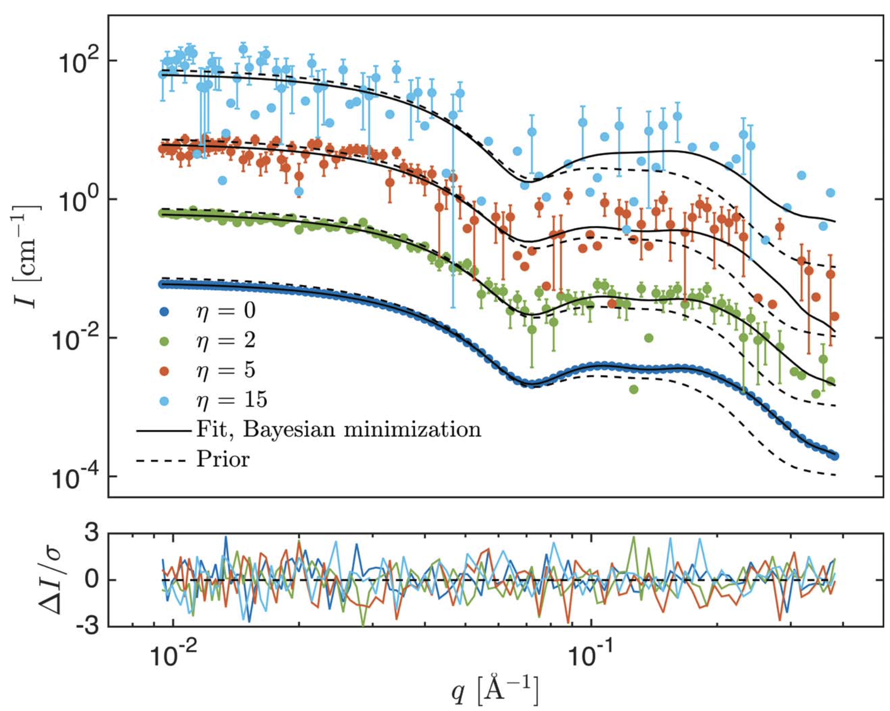

Home
BayesApp

BayesFit fits SAXS or SANS data (or a combination) with form factor and structure factors. Bayesian regularization is applied
Overview
- Batch version: GitHub
- Web application at (old version - very limited functionality): GenApp
- Publications: Larsen et al 2018 and Larsen 2025